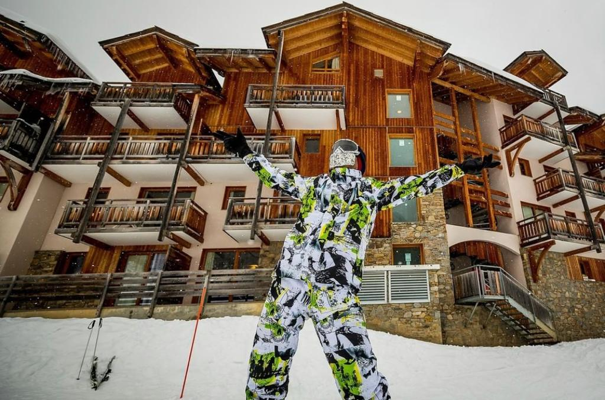
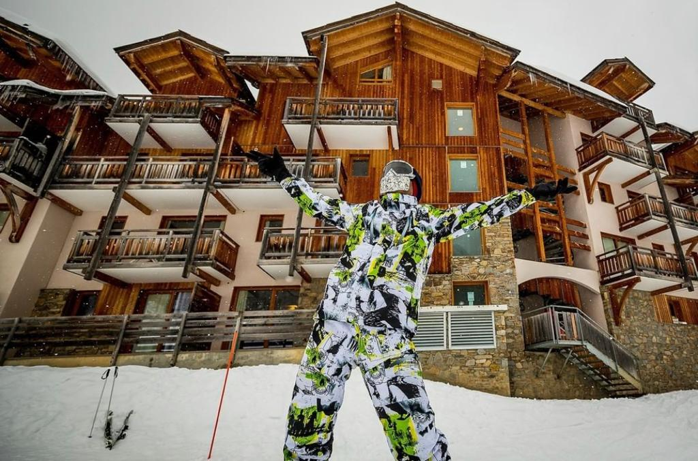

Welcome to the exceptional natural setting of Les Orres ski resort in the Hautes-Alpes From its ski area which peaks above Serre-Ponçon Lake, admire the panoramic views over the Ecrins National Park on one side and the Parpaillon mountain range on the other, whizz down the slopes lined by larch forests and enjoy the sunshine of the Southern Alps.
We landed in the city of geneva, which is in Switzerland and we arrived very late so we decided to sleep overnight in Switzerland, the next morning we rented a car to a town called Les Orress, 3 hours away from Switzerland, After we arrived in the town we had to collect our tickets and all the equipment with which you can start skiing